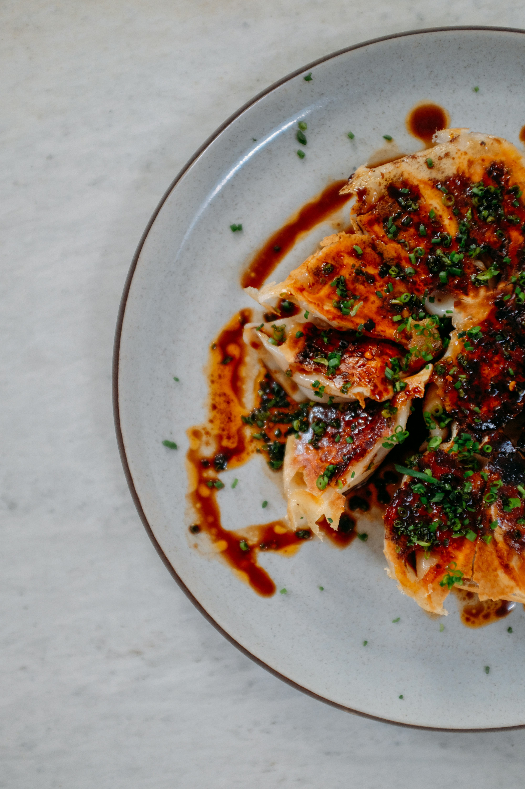

Chiken and Dumplings With some spice

Here's a simple recipe for chicken dumplings paired with a delicious crunchy garlic chili sauce. This recipe is straightforward, flavorful, and perfect for a homemade meal.
Chicken Dumplings
Ingredients:
For the Dumpling Filling:
- 1 pound (450g) ground chicken
- 2 cloves garlic, minced
- 1 tablespoon fresh ginger, grated
- 2 green onions, finely chopped
- 1 tablespoon soy sauce
- 1 tablespoon sesame oil
- 1 teaspoon salt
- 1/2 teaspoon black pepper
- 1/2 cup finely chopped cabbage (optional)
For the Dumpling Wrappers:
- 1 package of store-bought dumpling wrappers (or make your own if you prefer)
Instructions:
- Prepare the Filling:
In a large bowl, combine ground chicken, minced garlic, grated ginger, green onions, soy sauce, sesame oil, salt, and black pepper. If using cabbage, add it to the mixture.
Mix thoroughly until all ingredients are well incorporated.
- Assemble the Dumplings:
Take one dumpling wrapper and place a teaspoon of filling in the center.
Wet the edges of the wrapper with water using your finger.
Fold the wrapper over the filling to create a half-moon shape. Press the edges together to seal, ensuring no air is trapped inside. You can pleat the edges for a more traditional look if desired.
Repeat with the remaining wrappers and filling.
- Cook the Dumplings:
You can either steam or pan-fry the dumplings.
To Steam:
Place the dumplings in a steamer basket lined with parchment paper or cabbage leaves (to prevent sticking).
Steam over boiling water for about 10-12 minutes or until the chicken is fully cooked.
- To Pan-Fry:
Heat 1 tablespoon of oil in a non-stick skillet over medium heat.
Place the dumplings flat side down and cook until the bottoms are golden brown, about 2-3 minutes.
Carefully add 1/4 cup of water to the skillet and cover with a lid. Let them steam for another 5-7 minutes, or until the water evaporates and the dumplings are cooked through.
Crunchy Garlic Chili Sauce
Ingredients:
- 1/4 cup vegetable oil
- 6 cloves garlic, thinly sliced
- 2 tablespoons red chili flakes (adjust according to your heat preference)
- 1 tablespoon soy sauce
- 1 tablespoon rice vinegar
- 1 teaspoon sugar
- 1 teaspoon sesame seeds
- Salt to taste
Instructions:
-
Prepare the Garlic Oil:
Heat the vegetable oil in a small saucepan over low heat.
Add the sliced garlic and cook slowly until golden brown and crispy. Be careful not to burn it.
Remove from heat and stir in the red chili flakes, allowing the residual heat to bloom the spices.
-
Finish the Sauce:
Add soy sauce, rice vinegar, sugar, sesame seeds, and salt to the garlic oil.
Stir well to combine all the ingredients.
Let the sauce cool before transferring it to a jar or serving dish.
Serving
-
Serve the Dumplings:
Place the cooked dumplings on a serving plate and drizzle the crunchy garlic chili sauce over them.
Garnish with chopped green onions or cilantro if desired.
Serve with additional soy sauce on the side for dipping.
Tips
- Customizing Heat: Adjust the amount of chili flakes in the sauce to suit your heat preference.
- Filling Variations: You can substitute ground chicken with ground pork, turkey, or shrimp for a different flavor profile.
- Make-Ahead: Assemble the dumplings ahead of time and freeze them in a single layer on a baking sheet.
Once frozen, transfer to a zip-lock bag for easy storage. Cook from frozen by adding a few extra minutes to the cooking time.
Enjoy your homemade chicken dumplings with this vibrant and flavorful garlic chili sauce! If you have any questions or need further assistance, feel free to ask.